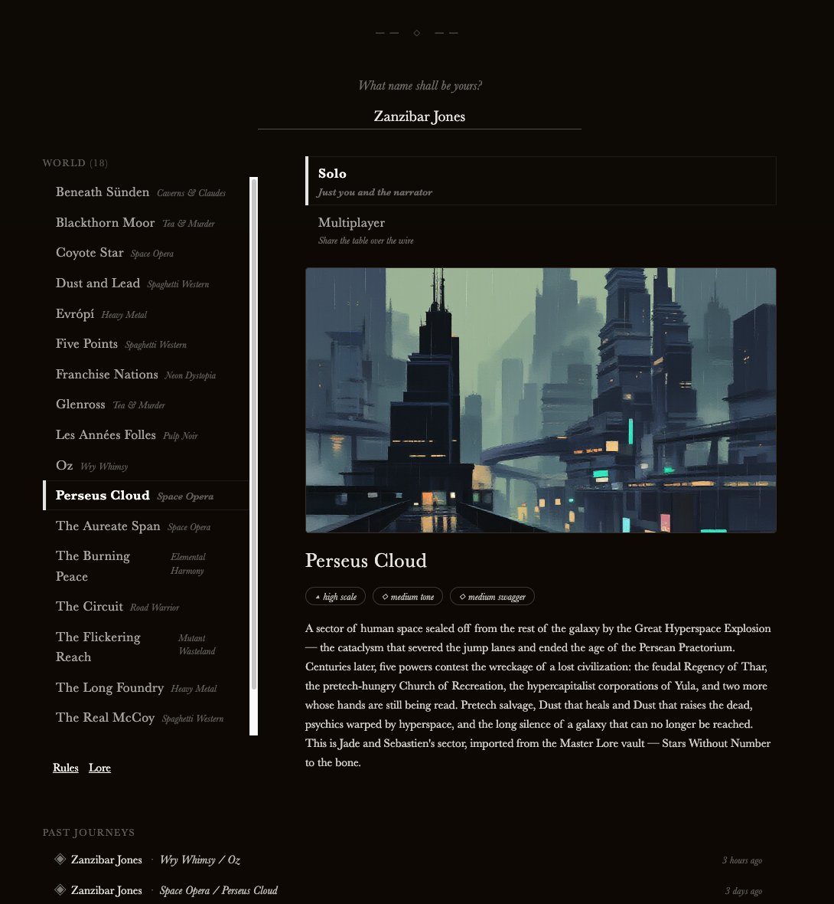
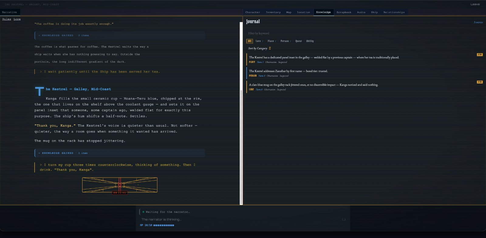

slabgorb.com
the home page of keith avery :: engineer & artist
// an AI dungeon master — any genre, real-time, multiplayer
A narrator engine that runs tabletop-style RPGs in any genre, powered by a Claude narrator invoked stateless per turn. Players connect from a browser, roll up a character through genre-driven scenes, and explore living worlds — with real-time image generation, streaming narration, adaptive music, and submit-and-wait multiplayer. This is my after-hours obsession, and it's the most ambitious thing I've built solo.

SideQuest is in private playtest.
Forever-DM, curious player, or just want to watch a Claude narrator run a dogfight? I'm onboarding alpha testers in small waves — bring a playgroup or fly solo.
A great tabletop game master improvises a world, voices a cast of characters, adjudicates the rules, and keeps the pacing taut — all at once. SideQuest asks whether a language model can do that job convincingly, for one player or a whole party, in any genre you can write down.
The answer is a genre-agnostic engine: the rules, tropes, character creation, audio, visual style, faction agendas and even invented languages all live in declarative genre packs. Swap the pack and the same engine runs a Leone-style spaghetti western or a cosy Edwardian murder mystery.
SideQuest is a five-repo ecosystem coordinated by an orchestrator, so the game engine, the client, and the GPU-bound media work can each evolve and scale on their own terms.
The narrator is the heart of it. Each turn is a bounded, stateless Claude call — no resumed session — with prompt caching on the stable system zones and native tool-use for every mechanical change: the narrator structurally cannot describe picking up a sword without invoking the tool that adds it to your inventory. Models are routed per call: Haiku for classification, Sonnet for narration, Opus for the moments that matter.
The decisions I'm proudest of are the unglamorous ones:
The AI agents follow a written doctrine — SOUL.md — that reads less like a config file and more like a great game master's philosophy. A few of its rules:
The sharpest insight didn't come from the code — it came from watching who actually uses it. The paying customer isn't the player; it's the dungeon master. A forever-DM builds a world, brings their own playgroup, and the table shows up — exactly like a private tabletop game. That reframes the "internal" tooling (the world builder, the GM dashboard, the observability layer) as the actual product surface, not scaffolding.
From there, a creator economy: DMs author worlds with AI as co-author — collapsing time-to-playable from months to an evening — their playgroups pay to play, and standout creators earn through a partner program. The model I'm proudest of is single-hop royalties netted against your own play costs: if your world catches on, the royalties it earns first pay down your own table's bill, so a popular world effectively plays for free.
And the positioning is clean. The AI-DM field forked in two — freeform but rule-less (AI Dungeon) versus real mechanics but locked to D&D 5e (Friends & Fables). SideQuest is the only one with open natural-language action and a real mechanical scaffold and a swappable, non-5e rulebook — plus concurrent, asymmetric-information multiplayer a chat-room bot physically cannot do.
Python 3.12FastAPIuvicornpydantic v2WebSocketsAnthropic SDKPostgreSQLAlembicOpenTelemetryReact 19TypeScriptViteTailwindThree.jsRapierZ-Image (MLX)ACE-StepCloudflare R2Jaeger